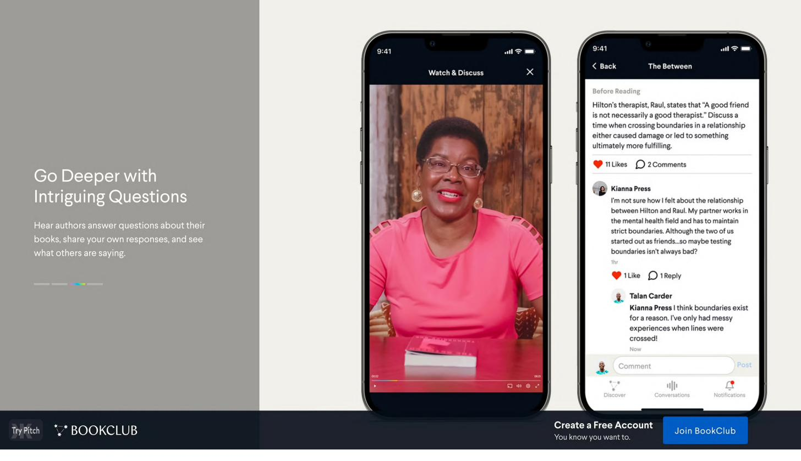
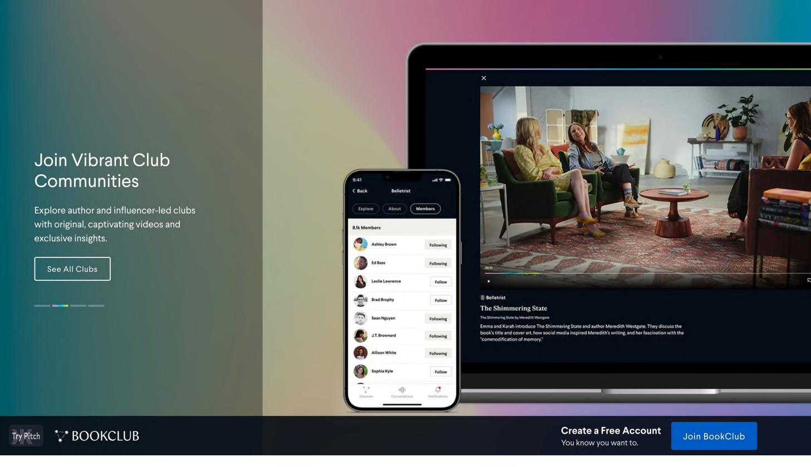

BookClub · Director of Design · 2020–2022
Building the design & research function from zero — "Inspired by books. Made for the people who love them."
Joined as the founding designer and grew to Director of Design — building the entire product design and research function from scratch while shipping the core platform connecting readers with authors through live, interactive book clubs.
The situation
BookClub launched with a clear and differentiated thesis: readers want more than a list of recommendations — they want to go deeper with the authors behind the books. The platform connected readers with authors through live, interactive video sessions and threaded community discussions, creating a model closer to a live event or a masterclass than a traditional reading app.
I joined as the founding designer when the product was still in its earliest stages. There was no design system, no research process, and no established product design practice. The job was to build all of it — while simultaneously shipping the core product experience that would determine whether BookClub's thesis would hold.

What we built
I built the product design and UX research functions from scratch — establishing the tooling, workflows, hiring criteria, and quality bar the team would operate against as we grew. As the founding designer, I owned the full product surface: onboarding, discovery, the author-led club experience, the Watch & Discuss feature (live author video + threaded community conversation side by side), and the post-session community layer.
The core design challenge was balancing asynchronous reading with synchronous community. The two happened on different timescales and required different interfaces, but they had to feel like a single coherent experience. We iterated through multiple rounds of user research and qualitative interviews with both readers and authors — building the research practice while using it to make product decisions in real time.
On the author side, we built an end-to-end production infrastructure for author video shoots — creating a dedicated studio environment where authors like Gary Vaynerchuk (Twelve and a Half) and comedian Hasan Minhaj could record rich, video-first book club content. That content became the product's primary engagement and retention driver.


Retention as a design problem
As the team and product matured, I grew from founding designer into the Director role — taking on hiring, team structure, and the research practice alongside product design work. We developed a repeatable research operation that fed directly into feature prioritization and quarterly roadmap planning.
On the business side, I worked closely with the founding team on retention metrics and engagement loops. The data pointed to a consistent finding: the features that kept users coming back weren't the ones we thought were most innovative — they were the ones that made the community feel real and the authors feel present. Human connection was the variable that mattered most, and we designed the product to maximize it.
What I learned
The founding designer role is fundamentally different from any other design leadership position. In the early days, you are the design culture. Every decision sets a precedent: how feedback is given, what "good" looks like, how research connects to product decisions. That weight sharpens your thinking in ways that nothing else can replicate.
I also learned that consumer social products live or die on a single question: does this make the connection feel real? Not the feature set, not the onboarding flow — the felt quality of the relationship between users, and between users and the creators they care about. That's the design problem underneath everything else.